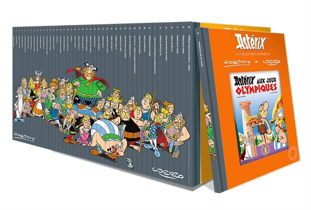

Les stats les plus importantes!!!

Les adaptations cinématographiques:
Plusieurs films ont été adaptés des aventures d’Astérix et Obélix, en animation ou en live-action.
Voici une liste des principales adaptations avec quelques détails :
A. Films d'animation
Astérix le Gaulois (1967)
Premier film animé adapté du tout premier album.
Fidèle à l’esprit de la bande dessinée.Astérix et Cléopâtre (1968)
Inspiré de l'album du même nom.
Film apprécié pour sa chanson culte "Le pudding à l’arsenic".Astérix : Le Domaine des dieux (2014)
Animation en 3D moderne, succès critique et commercial.
Réalisé par Alexandre Astier et Louis Clichy.
B. Films en live-action
Astérix et Obélix contre César (1999)
Réalisation : Claude Zidi.
Avec Christian Clavier (Astérix) et Gérard Depardieu (Obélix).
Succès au box-office malgré des critiques mitigées.Astérix et Obélix : Mission Cléopâtre (2002)
Réalisé par Alain Chabat.
Gros succès populaire grâce à son humour et ses répliques cultes.
Acteurs : Jamel Debbouze, Gérard Depardieu, Monica Bellucci.Astérix et Obélix : L'Empire du Milieu (2023)
Réalisation : Guillaume Canet, qui joue aussi Astérix.
Nouvelle aventure inédite avec des acteurs comme Zlatan Ibrahimović en guest star.
-
C. Anecdotes
Mission Cléopâtre reste l’un des films français les plus rentables de l’histoire.
Les films en live-action jouent souvent sur des caméos célèbres (comme Zinédine Zidane dans Astérix aux Jeux Olympiques).
La BD reste une source d'inspiration inépuisable, avec des films constamment réadaptés pour les nouvelles générations.
Clique si tu veux écouter de la musique!